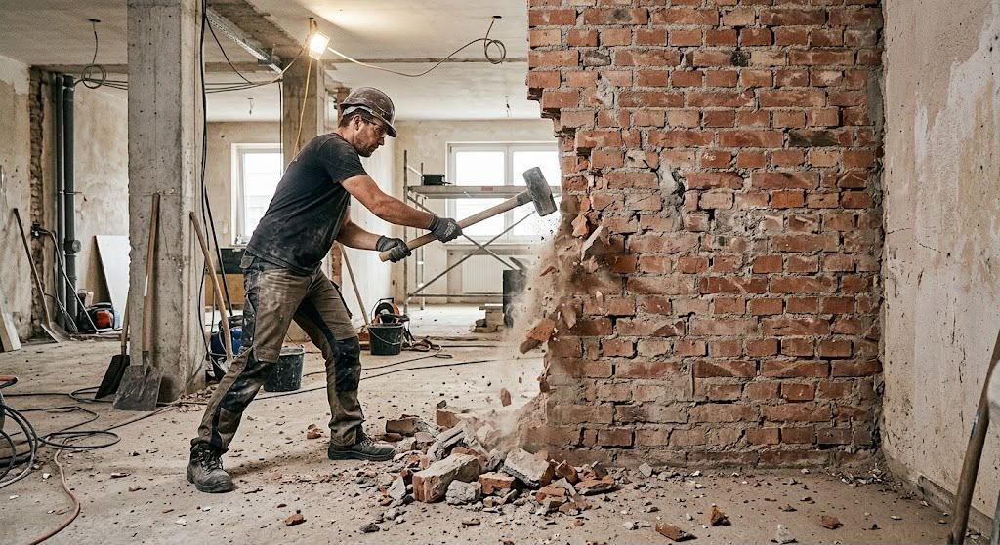
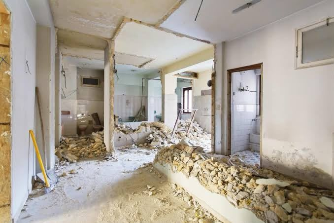
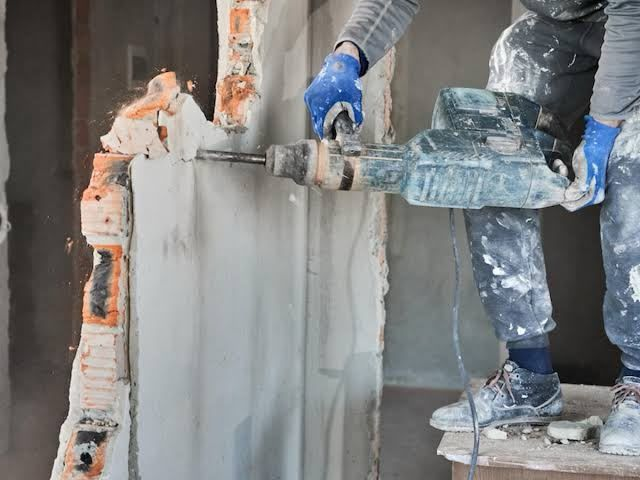
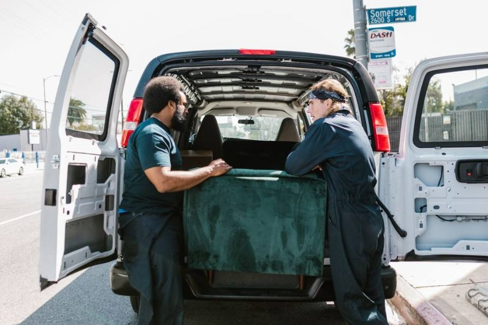
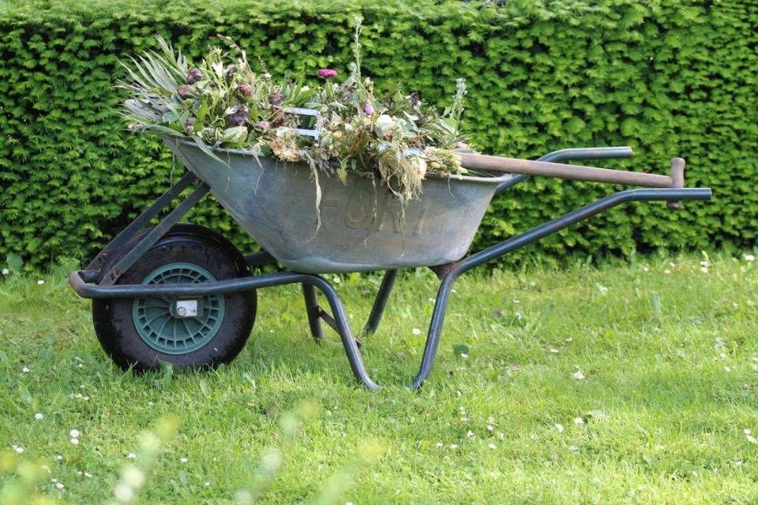

Kleinabriss
Bauten und Bauteile, die komplett weg sollen, vom Gartenhaus bis zur Garage.

Kreis Stormarn · Schleswig-Holstein
Ausgediente Ställe, Schuppen und Garagen auf Dorfgrundstücken: In der Stormarner Gemeinde Steinburg bauen wir Nebengebäude zurück und entkernen auf Wunsch auch das Wohnhaus.
Gemeint ist hier die Gemeinde Steinburg im Kreis Stormarn, nicht der gleichnamige Kreis mit Itzehoe. In ihrer heutigen Form mit Eichede, Mollhagen und Sprenge besteht sie seit 1978. Verwaltet wird sie vom Amt Bad Oldesloe-Land verwaltet. Die Einwohnerstatistik für Ende 2022 weist 2.795 Personen auf einer Fläche von 23,9 km² aus. Den Namen verdankt die Gemeinde einer Sage über die Burg eines Raubritters; ob diese Burg je existierte, ist nicht belegt.
Eichede ist das älteste der drei Dörfer. Urkundlich erscheint es 1259, um 1280 wurde es Kirchdorf. Das Steuerregister von 1619 zählt dort 16 Vollhufen und 6 Halbhufen. Im Jahr 1864 vernichtete ein Feuer den kompletten westlichen Teil des Dorfes. Bis heute verbindet das Eichenblatt im Gemeindewappen von 1989 die Orte mit ihrer forstwirtschaftlichen Vergangenheit.
Wie sich die Dörfer wandeln, lässt sich an zwei Bebauungsplänen in Eichede ablesen. An der Oldesloer Straße liegt ein Plangebiet auf einer Pferdekoppel neben einem aufgegebenen Pferdehaltungsbetrieb. Die Begründung spricht von Flächen ehemaliger Stallanlagen und einer dorftypischen Mischung aus Wohnen und Landwirtschaft. Ein zweiter Plan an der Möllner Straße schließt das Grundstück einer Kfz-Werkstatt mit Büro- und Wohngebäude ein. Neue Fassaden sollen in beiden Gebieten aus rotem bis rotbraunem Mauerwerk oder hellem Putz bestehen.
Auf vielen Höfen stehen also Bauten, deren landwirtschaftliche Aufgabe erledigt ist. Beim Kleinabriss übernehmen wir zum Beispiel:
Holz, Metall und Bauschutt sortieren wir direkt auf dem Grundstück. Wellplatten auf älteren Ställen bestehen nicht selten aus Asbestzement, der erst seit dem 31. Oktober 1993 verboten ist. Solche Dächer nimmt ein zugelassener Fachbetrieb ab, den wir Ihnen vermitteln.
Weder Steinburg noch das Amt Bad Oldesloe-Land haben eine eigene Bauaufsicht. Der Fachdienst Bauaufsicht des Kreises Stormarn in der Mommsenstraße 14 in Bad Oldesloe führt die Gemeinde in seiner Zuständigkeitsliste (Stand 15.06.2026). Die Stadt Bad Oldesloe selbst erledigt diese Aufgabe dagegen mit eigenem Personal.
Die Landesbauordnung (LBO) trennt beim Abbruch zwischen verfahrensfreien und anzeigepflichtigen Fällen. Ohne Verfahren dürfen unter anderem Anlagen weg, die auch ohne Verfahren hätten errichtet werden dürfen. Darunter fallen auch frei stehende Bauten der Gebäudeklassen 1 und 3, etwa ein einzeln stehender Stall. Alle übrigen Abbrüche müssen der Bauaufsicht mindestens einen Monat vor Beginn angezeigt werden. Kulturdenkmale sind von der Verfahrensfreiheit ausgenommen. Welche Regel für Ihren Stall greift, schauen wir uns beim Ortstermin an; im Zweifel klären Sie es vorher mit dem Kreis.
An beide Eicheder Plangebiete grenzen gesetzlich geschützte Knicks. Laut den Planbegründungen dürfen Gehölze nach dem Bundesnaturschutzgesetz nur vom 1. Oktober bis Ende Februar beseitigt werden. Steht ein Schuppen dicht an einem Knick, arbeiten wir so, dass Wall und Bewuchs unbeschädigt bleiben.
Braucht der Container Platz auf einer Gemeindestraße, ist eine Sondernutzungserlaubnis nötig. Innerhalb von Ortsdurchfahrten erteilt sie nach dem Straßen- und Wegegesetz die Gemeinde, Ansprechpartner ist das Amt Bad Oldesloe-Land. Passt er auf die eigene Hoffläche, entfällt der Antrag. Im Kreis Stormarn gibt es zum Beispiel auch eine Seite zu Bargteheide. Fotos von Ihrem Grundstück senden Sie uns über das Anfrageformular.
Leistungen
Bauten und Bauteile, die komplett weg sollen, vom Gartenhaus bis zur Garage.

Räume bis auf den Rohbau zurück, z. B. vor einer Sanierung.

Gezielter Rückbau einzelner Bauteile in bewohnten Häusern.

Wohnung, Keller, Dachboden oder Garage leer räumen, auch ganze Haushalte.

Garten oder Kleingarten komplett räumen: Laube, Platten, Grün, Gerümpel.
Schutt von Ihrer Renovierung abholen lassen, auch ohne Abriss.
Häufige Fragen
Nein. Die Gemeinde Steinburg liegt im Kreis Stormarn und wird vom Amt Bad Oldesloe-Land verwaltet. Der Kreis Steinburg mit der Kreisstadt Itzehoe ist ein ganz anderer Kreis.
Das hängt von Größe und Bauart ab. Freistehende Gebäude der Gebäudeklassen 1 und 3 sind laut LBO meist verfahrensfrei, andere Abbrüche zeigen Sie mindestens einen Monat vorher bei der Bauaufsicht des Kreises Stormarn an. Nach der Besichtigung sagen wir Ihnen, was Sie dort klären sollten.
Nein. Anfahrt und Entsorgung stecken im Festpreis. Nur eine Asbestsanierung läuft getrennt über einen Fachbetrieb.
Kontakt
Kostenlos und unverbindlich, vor Ort oder per Video. Wir melden uns innerhalb eines Werktags.
Einsatzgebiet